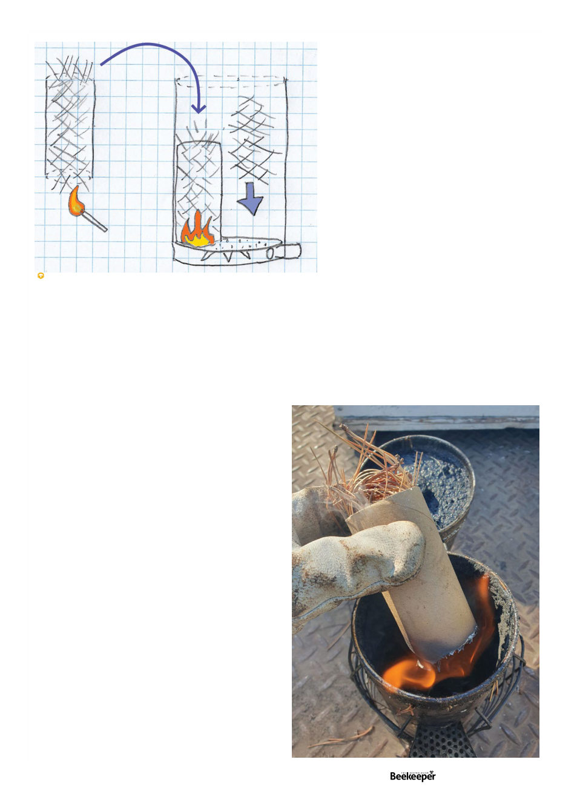

more fuel on top of it that smothers the flame.
Enter those cardboard tubes at the center of a bog
roll. I stuffed one of those with pine needles and lit
the bottom of that. The tube itself makes it even
more convenient to hold (though I still put a glove
on that hand first). The pine needles in the bottom
easily ignite on the first try, and then I usually blow
on it a bit until the flame has moved up into the
tube; then I put it in the bottom of the smoker and
I can pack fuel around it then without worrying
about smothering the fire. It acts as its own little
chimney, the white smoke curling out the top
while I pack fuel around it and eventually over
the top of it, and voila, a consistently one-light
smoker.
Another similar smoker fuel innovation
has been developed by Victorian beekeeper
John Edmonds. Running a beekeeping supply
store, he has a near endless amount of waste
cardboard from boxes things came in going
into recycling. After some experimentation he
figured out that if cardboard is cut into strips
the width of the internal height of the smoker
drum (above the spacing table), with the corrugations
(ripples in the cardboard) going width-wise, and then
roll it up tightly until you have rolled up cardboard the
size of the smoker (corrugations now going vertically
up and down), tie it up with twine, you can light the
bottom of this and put it in the smoker and it will give
you a nice slow burn from the start and lasts a fair good
while. This one I call The Beekeeper’s Cinnamon Scroll.
out and while you’re putting it back in it inevitably will really
want to go in upside down, but make sure it eventually goes
back in correctly.
I see a lot of beginners start by putting fuel in their smoker,
and then try lighting the top of it. Fire doesn’t like to travel
downwards, this is not an effective method.
I was surprised one day to be helping a newer beekeeper
and he squirted lighter fluid into his smoker to get it started.
I’ll be honest, there’s some things that just wrankle my
professional pride perhaps for no real logical reason and I
think that is one of them. That strikes me as “cheating.”
The correct method of lighting the smoker is to light the
bottom of your fuel before putting it into the smoker. To do
this I usually put on my left glove so I don’t burn my hand,
then I take a tight wad of pine needles in that hand, with
my right I use a barbecue lighter to light the bottom of that
material. Once its going I shove it into the bottom of the
smoker and then give it a quick series of puffs until, ideally,
thick white smoke is lazily billowing up from the contents,
and then I pack more pine needles down on top of it. If
you’re shooting out flames it’s too hot and you probably
need to intentionally semi-smother the fire by packing more
fuel in and letting it slowly get a nice quiet smoulder going.
Storytime: once, using hessian in California, I thought it had
gone out and removed the wad of hessian from the smoker
to relight it. I happened to be standing in and surrounded
by thoroughly dry grass, and the hessian immediately burst
into flame once removed from the smoker, so I found myself
holding a fireball. Thankfully I was wearing my glove but
it quickly became painful anyway. Fortunately, choking
back the urge to panic, I was able to jam it back in without
dropping it or any burning embers.
And here’s where I want to introduce one of my
proudest yet simple inventions. I call it “the beekeeper’s
cigar.” You see there’s two problems with even the correct
method – sometimes once you’ve got your flaming
wad of pine needles going well, when you go to stuff
it in to the bottom of the smoker it falls apart and goes
out. Or conversely, sometimes when you go to pack
Light the bottom of fuel in a toilet-paper-tube, place in smoker and
then add more fuel around it.
Vol. 126 | No. 06 |
Celebrating 125 years | 45